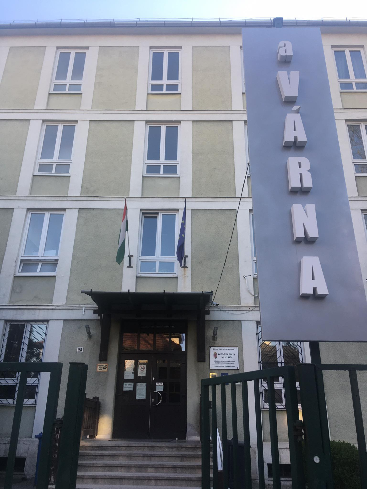

Spend_time
I spend most of my time at school, then working and programming, and I also go to music school and to the gym. I used to be a sportsman, but now I'm only interested in the gym. I've been studying organ at music school for 6 years, that's when I started my music studies, I never played piano before. I started playing the piano alongside the organ. I have been playing guitar for 1 and a half years, I started playing acoustic and classical, but now I play electric. I go to work 2 days on weekdays and 1 day on weekends usually, I work in Mc'Donalds (when I do this site).
Free_time
In my free time I hang out with my friends, we usually go to the cinema, or do some sport, or just go out for a meal and just talk and hang out. I like hanging out with them.
Sometimes I play xbox, one of my favorite games is NBA2K series, I play FIFA a lot, other than that Gears of War series is one of my favorites, but I also like retro games, I like making games or developing games more than playing games.

In my free time I like to play music or just listen to quality music, but I also like to watch movies or series.
I also like to play board games, but I haven't played those for a long time.
I also like to read, but I especially like historical books, but I also like to read a book about a person who inspires me in life.
Sport_in_my_life
My sporting career started quite early at the age of 6, I played football for Kispest Honvéd fc, but I stopped because I didn't feel unique in the family, because everyone in the family played football, and I wanted something new, a sport where I could be the best of the best;
So basketball came along, I fell in love with this beautiful sport when I saw Kobe Bryant play on TV, but my favorite team became the Miami Heat.
I started playing basketball in Honvéd, then I ended up playing for the Zúgló Eagles, and before my covid I signed up for a tryout with the Kőbánya Wasps, but my covid came and I decided to quit because I was just doing it as a habit, but I didn't really like it anymore.

I didn't want to give up the sport, so I returned to football, to BKV Előre SC. Now I don't play football anymore because it doesn't fit into my life, because I don't have the time.
Now I just go to the gym and go down to the park to play football or basketball.
My favourite
My favourite singers are Michael Jackson and Bryan Adams.
And my favourite bands are Gun's n roses and Bon jovi.
If I had to pick a Hungarian, Omega would be my favourite.
My favourite song is Hotel California by The Eagles.
Hungarians are good at...
I don't think it's an exaggeration to say that Hungary is one of the elite in sport, given that we have a population of 10 million people, and yet we're good at almost all sports. But where we really excel is in water sports, but in handball, football, and even basketball, we are among the good ones. Hungarian football was the best so far (it's not an exaggeration to say) under Puskás, when we had the best national team in the world and everybody wanted a Hungarian in their team, but 40 years ago Hungarian football took a downhill slide. Now we are building a national team with a lot of hope. In 2016 we were in the European championship, we repeated that in 2021 (2020 eb) and we were in group A in the nations league, and not only that, we were there, but we stayed in league A and almost reached the semi-finals.
The most valuable player of the Hungarian national team is Dominik Szoboszlai.